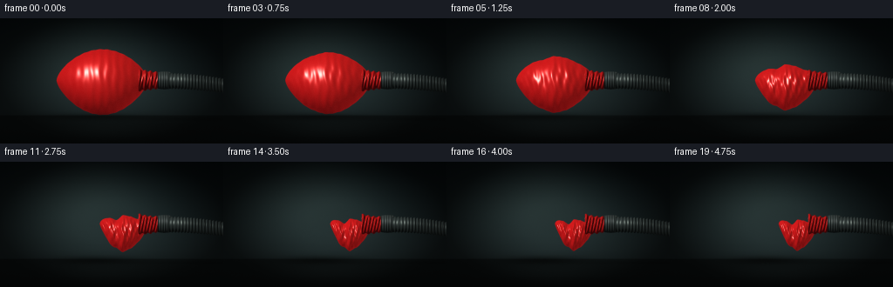
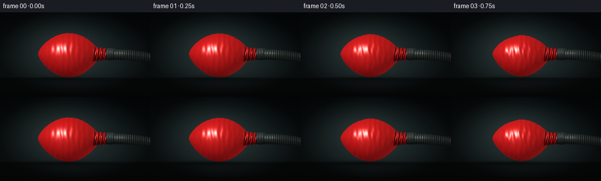

CODING AGENTS AS PIXEL WORLD MODELS
traex/DeepSeek-V4.1-Flash · mechanics_0024
点击播放 · 原生 RGB 像素
逐轮保存的候选
回放视频、检查图与代码变化。
每份候选均可单独播放。实际图片检查记录在下方工具轨迹中。
候选 01播放与检查图
点击播放 · 原生 RGB 像素


展开代码变化
--- 上一保存版本
+++ 本次保存版本
@@ -0,0 +1,356 @@
+"""Procedurally render a balloon being evacuated by a vacuum hose."""
+
+from pathlib import Path
+
+import cv2
+import numpy as np
+from PIL import Image, ImageDraw, ImageFilter
+
+import artifact_io
+
+
+ROOT = Path(__file__).resolve().parent
+W, H = 256, 144
+SS = 4
+RW, RH = W * SS, H * SS
+FPS = 4
+N_FRAMES = 20
+
+
+def smoothstep(a, b, x):
+ t = np.clip((x - a) / (b - a), 0.0, 1.0)
+ return t * t * (3.0 - 2.0 * t)
+
+
+def normalize(v):
+ return v / np.maximum(np.linalg.norm(v, axis=0, keepdims=True), 1e-8)
+
+
+def soft_shadow(mask, sigma):
+ return cv2.GaussianBlur(mask.astype(np.float32), (0, 0), sigma)
+
+
+def make_background(frame_index):
+ yy, xx = np.mgrid[0:RH, 0:RW].astype(np.float32)
+ yn = yy / RH
+ xn = xx / RW
+
+ top = np.array([8.0, 15.0, 17.0], np.float32)
+ middle = np.array([28.0, 38.0, 39.0], np.float32)
+ floor = np.array([18.0, 24.0, 24.0], np.float32)
+ blend = np.clip(yn / 0.70, 0.0, 1.0)[..., None]
+ bg = top + (middle - top) * blend
+
+ # A broad, soft pool of studio light behind the balloon.
+ glow = np.exp(
+ -(
+ ((xx - RW * 0.39) / (RW * 0.34)) ** 2
+ + ((yy - RH * 0.30) / (RH * 0.36)) ** 2
+ )
+ )
+ bg += glow[..., None] * np.array([18.0, 21.0, 19.0], np.float32)
+
+ horizon = int(RH * 0.775)
+ floor_mask = smoothstep(horizon - 3, horizon + 3, yy)
+ floor_grad = np.clip((yy - horizon) / (RH - horizon), 0.0, 1.0)[..., None]
+ floor_col = floor + (np.array([13.0, 17.0, 17.0], np.float32) - floor) * floor_grad
+ bg = bg * (1.0 - floor_mask[..., None]) + floor_col * floor_mask[..., None]
+
+ # Faint table sheen, kept low contrast.
+ sheen = np.exp(
+ -(
+ ((xx - RW * 0.45) / (RW * 0.31)) ** 2
+ + ((yy - RH * 0.90) / (RH * 0.075)) ** 2
+ )
+ )
+ bg += sheen[..., None] * np.array([4.0, 5.0, 5.0], np.float32)
+
+ vignette = np.clip(
+ 1.08
+ - 0.52 * ((xn - 0.5) ** 2 + (yn - 0.47) ** 2) * 4.0,
+ 0.55,
+ 1.05,
+ )
+ bg *= vignette[..., None]
+ return np.clip(bg, 0, 255)
+
+
+def render_balloon(p, frame_index, bg):
+ yy, xx = np.mgrid[0:RH, 0:RW].astype(np.float32)
+ mouth_x = RW * 0.663
+ mouth_y = RH * 0.495
+
+ # Nonlinear shape change: the visible body loses length and width while
+ # its center of mass drops below the fixed mouth.
+ length = 200.0 * (2.10 - 1.20 * p)
+ max_r = 200.0 * (0.755 - 0.350 * p)
+ sag = 8.0 + 50.0 * p
+ vscale = 1.0 - 0.20 * p
+ dscale = 1.0 - 0.13 * p
+
+ u = (mouth_x - xx) / length
+ valid = (u >= 0.0) & (u <= 1.0)
+ uc = np.clip(u, 0.0, 1.0)
+
+ center_y = mouth_y + sag * np.maximum(np.sin(np.pi * uc), 0.0) ** 1.15
+ center_y += p * 8.0 * np.sin(3.2 * np.pi * uc + 0.35) * np.sin(np.pi * uc)
+
+ # Slightly irregular profile and large lobes emerge as the rubber folds.
+ r = max_r * np.maximum(np.sin(np.pi * uc), 0.0) ** 0.64
+ r *= 1.0 + p * (
+ 0.095 * np.sin(5.0 * np.pi * uc + 0.55)
+ + 0.055 * np.sin(9.0 * np.pi * uc - 1.15)
+ ) * np.sin(np.pi * uc)
+ r *= 1.0 + 0.006 * np.sin(23.0 * np.pi * uc + 1.1)
+ r = np.maximum(r, 0.0)
+
+ q = (yy - center_y) / np.maximum(r * vscale, 1.0)
+ body_mask = valid & (np.abs(q) <= 1.0) & (r > 0.8)
+ qc = np.clip(q, -1.0, 1.0)
+
+ depth = r * dscale * np.sqrt(np.maximum(1.0 - qc * qc, 0.0))
+ fold_amp = (0.006 + 0.052 * p) * r
+ fold = (
+ np.sin(8.5 * np.pi * uc + 4.2 * qc + 0.75 * np.sin(2.4 * np.pi * p))
+ + 0.55 * np.sin(17.0 * np.pi * uc - 5.3 * qc + 1.2)
+ + 0.32 * np.sin(28.0 * np.pi * uc + 8.0 * qc)
+ )
+ depth += fold_amp * fold * np.maximum(1.0 - qc * qc, 0.0) ** 0.55
+
+ # A small pressure tremor makes the extraction feel mechanical.
+ tremor = 1.0 + 0.0018 * np.sin(2.0 * np.pi * (frame_index / 2.3))
+ depth *= tremor
+
+ dx = np.gradient(depth, axis=1)
+ dy = np.gradient(depth, axis=0)
+ nx = -dx
+ ny = dy
+ nz = np.ones_like(depth)
+ n = normalize(np.stack([nx, ny, nz], axis=0))
+
+ l1 = normalize(np.array([-0.52, 0.58, 0.73], np.float32))
+ l2 = normalize(np.array([0.66, 0.10, 0.62], np.float32))
+ view = np.array([0.0, 0.0, 1.0], np.float32)
+ ndl1 = np.clip(np.sum(n * l1[:, None, None], axis=0), 0.0, 1.0)
+ ndl2 = np.clip(np.sum(n * l2[:, None, None], axis=0), 0.0, 1.0)
+ wrap = np.clip((ndl1 + 0.30) / 1.30, 0.0, 1.0)
+
+ dark = np.array([53.0, 3.0, 5.0], np.float32)
+ bright = np.array([195.0, 24.0, 25.0], np.float32)
+ col = dark + (bright - dark) * (0.10 + 0.90 * wrap[..., None])
+ col += np.array([14.0, 6.0, 4.0], np.float32) * ndl2[..., None]
+
+ h1 = normalize(l1 + view)
+ spec_angle = np.clip(np.sum(n * h1[:, None, None], axis=0), 0.0, 1.0)
+ spec = spec_angle ** 58 * 220.0 + spec_angle ** 11 * 20.0
+ col += spec[..., None] * np.array([1.0, 0.84, 0.80], np.float32)
+
+ fresnel = (1.0 - np.clip(n[2], 0.0, 1.0)) ** 2.7
+ edge_tint = np.array([42.0, 9.0, 10.0], np.float32)
+ col += fresnel[..., None] * edge_tint
+
+ # Soft transmitted glow through the thinnest, most folded rubber.
+ glow = np.clip(0.5 - 0.5 * np.sum(n * l1[:, None, None], axis=0), 0.0, 1.0)
+ col += glow[..., None] * np.array([14.0, 1.5, 1.0], np.float32)
+
+ # Fine latex grain is fixed in screen space to avoid temporal flicker.
+ rng = np.random.default_rng(41)
+ grain = rng.normal(0.0, 1.0, (RH, RW)).astype(np.float32)
+ grain = cv2.GaussianBlur(grain, (0, 0), 0.7)
+ col += grain[..., None] * 2.8
+
+ # Occlusion where the balloon approaches the tabletop.
+ bottom_occlusion = smoothstep(RH * 0.70, RH * 0.79, yy)[..., None]
+ col *= 1.0 - 0.15 * bottom_occlusion
+
+ alpha = body_mask.astype(np.float32)
+ alpha = cv2.GaussianBlur(alpha, (0, 0), 0.75)
+ out = bg * (1.0 - alpha[..., None]) + col * alpha[..., None]
+ return out, body_mask, alpha
+
+
+def render_neck_and_hose(p, frame_index, bg):
+ yy, xx = np.mgrid[0:RH, 0:RW].astype(np.float32)
+ mouth_y = RH * 0.495
+ out = bg.copy()
+
+ # Red latex neck stretched over the metal inlet.
+ x0, x1 = RW * 0.620, RW * 0.716
+ t = np.clip((xx - x0) / (x1 - x0), 0.0, 1.0)
+ neck_cy = mouth_y + 5.0 * p * np.sin(np.pi * t)
+ neck_r = (49.0 - 13.0 * t + 3.5 * np.sin(8.0 * np.pi * t)) * (1.0 - 0.08 * p)
+ q = (yy - neck_cy) / np.maximum(neck_r, 1.0)
+ mask = (xx >= x0) & (xx <= x1) & (np.abs(q) <= 1.0)
+ qc = np.clip(q, -1.0, 1.0)
+ depth = neck_r * np.sqrt(np.maximum(1.0 - qc * qc, 0.0))
+ depth += (3.0 + 7.0 * p) * np.sin(14.0 * np.pi * t + 3.4 * qc) * (
+ 1.0 - qc * qc
+ )
+ dx = np.gradient(depth, axis=1)
+ dy = np.gradient(depth, axis=0)
+ n = normalize(np.stack([-dx, dy, np.ones_like(depth)], axis=0))
+ l1 = normalize(np.array([-0.52, 0.58, 0.73], np.float32))
+ ndl = np.clip(np.sum(n * l1[:, None, None], axis=0), 0.0, 1.0)
+ col = (
+ np.array([45.0, 3.0, 4.0], np.float32)
+ + (np.array([177.0, 25.0, 25.0], np.float32) - np.array([45.0, 3.0, 4.0], np.float32))
+ * ndl[..., None]
+ )
+ h = normalize(l1 + np.array([0.0, 0.0, 1.0], np.float32))
+ spec = np.clip(np.sum(n * h[:, None, None], axis=0), 0.0, 1.0) ** 34
+ col += spec[..., None] * np.array([150.0, 116.0, 105.0], np.float32)
+ col += (1.0 - np.clip(n[2], 0.0, 1.0))[..., None] ** 3 * np.array(
+ [32.0, 6.0, 6.0], np.float32
+ )
+ alpha = cv2.GaussianBlur(mask.astype(np.float32), (0, 0), 0.75)
+ out = out * (1.0 - alpha[..., None]) + col * alpha[..., None]
+
+ # A short black rubber sleeve and steel clamp seal the neck to the hose.
+ x0, x1 = RW * 0.706, RW * 0.765
+ t = np.clip((xx - x0) / (x1 - x0), 0.0, 1.0)
+ cuff_cy = mouth_y
+ cuff_r = 38.0 + 3.0 * np.sin(np.pi * t)
+ q = (yy - cuff_cy) / cuff_r
+ cuff_mask = (xx >= x0) & (xx <= x1) & (np.abs(q) <= 1.0)
+ qc = np.clip(q, -1.0, 1.0)
+ cuff_depth = cuff_r * np.sqrt(np.maximum(1.0 - qc * qc, 0.0))
+ cuff_depth += 2.0 * np.sin(11.0 * np.pi * t + 1.3)
+ dx = np.gradient(cuff_depth, axis=1)
+ dy = np.gradient(cuff_depth, axis=0)
+ n = normalize(np.stack([-dx, dy, np.ones_like(cuff_depth)], axis=0))
+ ndl = np.clip(np.sum(n * l1[:, None, None], axis=0), 0.0, 1.0)
+ cuff = np.array([10.0, 13.0, 13.0], np.float32) + ndl[..., None] * np.array(
+ [49.0, 54.0, 52.0], np.float32
+ )
+ cuff += np.clip(np.sum(n * h[:, None, None], axis=0), 0.0, 1.0)[..., None] ** 25 * 95.0
+ alpha = cv2.GaussianBlur(cuff_mask.astype(np.float32), (0, 0), 0.7)
+ out = out * (1.0 - alpha[..., None]) + cuff * alpha[..., None]
+
+ # Ribbed hose exits frame at right, with a slight sag under its weight.
+ x0, x1 = RW * 0.752, RW * 1.04
+ t = np.clip((xx - x0) / (x1 - x0), 0.0, 1.0)
+ hose_cy = mouth_y + 3.0 + 30.0 * t * t
+ hose_r = 35.0 - 2.0 * t + 2.4 * np.sin(2.0 * np.pi * (t * 20.0))
+ q = (yy - hose_cy) / hose_r
+ hose_mask = (xx >= x0) & (xx <= x1) & (np.abs(q) <= 1.0)
+ qc = np.clip(q, -1.0, 1.0)
+ hose_depth = hose_r * np.sqrt(np.maximum(1.0 - qc * qc, 0.0))
+ hose_depth += 2.2 * np.sin(2.0 * np.pi * t * 21.0 + 2.3)
+ dx = np.gradient(hose_depth, axis=1)
+ dy = np.gradient(hose_depth, axis=0)
+ n = normalize(np.stack([-dx, dy, np.ones_like(hose_depth)], axis=0))
+ ndl = np.clip(np.sum(n * l1[:, None, None], axis=0), 0.0, 1.0)
+ rib = 0.5 + 0.5 * np.sin(2.0 * np.pi * t * 21.0 + 0.9 * qc)
+ hose_col = np.array([6.0, 9.0, 9.0], np.float32) + ndl[..., None] * np.array(
+ [42.0, 47.0, 46.0], np.float32
+ )
+ hose_col += rib[..., None] * np.array([11.0, 12.0, 11.0], np.float32)
+ spec = np.clip(np.sum(n * h[:, None, None], axis=0), 0.0, 1.0) ** 32
+ hose_col += spec[..., None] * np.array([88.0, 92.0, 86.0], np.float32)
+ alpha = cv2.GaussianBlur(hose_mask.astype(np.float32), (0, 0), 0.75)
+ out = out * (1.0 - alpha[..., None]) + hose_col * alpha[..., None]
+ return out, hose_mask | cuff_mask | mask
+
+
+def add_shadows(image, body_mask, p, frame_index):
+ yy, xx = np.mgrid[0:RH, 0:RW].astype(np.float32)
+ floor_y = RH * 0.787
+ width = 260.0 - 80.0 * p
+ cx = RW * (0.405 + 0.025 * p)
+ shadow = np.exp(
+ -(
+ ((xx - cx) / width) ** 2
+ + ((yy - floor_y) / (15.0 + 4.0 * p)) ** 2
+ )
+ )
+ # Hose casts a separate, thin shadow.
+ hose_shadow = np.exp(
+ -(
+ ((xx - RW * 0.88) / (RW * 0.24)) ** 2
+ + ((yy - (floor_y + 10.0)) / 8.0) ** 2
+ )
+ )
+ shade = np.clip(shadow * (0.48 + 0.13 * p) + hose_shadow * 0.15, 0.0, 0.62)
+ image *= 1.0 - shade[..., None]
+ image += shadow[..., None] * np.array([3.0, 3.5, 3.2], np.float32)
+ return image
+
+
+def render_frame(frame_index):
+ p_table = np.array(
+ [
+ 0.00,
+ 0.018,
+ 0.055,
+ 0.105,
+ 0.170,
+ 0.250,
+ 0.345,
+ 0.445,
+ 0.550,
+ 0.650,
+ 0.745,
+ 0.825,
+ 0.888,
+ 0.932,
+ 0.962,
+ 0.980,
+ 0.991,
+ 0.997,
+ 1.000,
+ 1.000,
+ ],
+ np.float32,
+ )
+ p = float(p_table[frame_index])
+
+ bg = make_background(frame_index)
+ img, body_mask, _ = render_balloon(p, frame_index, bg)
+ img, hardware_mask = render_neck_and_hose(p, frame_index, img)
+ img = add_shadows(img, body_mask, p, frame_index)
+
+ # Gentle highlight bloom from the large rubber specular.
+ lum = img.mean(axis=2)
+ highlights = np.clip((lum - 155.0) / 100.0, 0.0, 1.0)
+ bloom = cv2.GaussianBlur(highlights, (0, 0), 6.0)
+ img += bloom[..., None] * np.array([24.0, 13.0, 12.0], np.float32)
+
+ # Fixed sensor grain and a restrained vignette complete the studio image.
+ rng = np.random.default_rng(900 + frame_index)
+ grain = rng.normal(0.0, 1.0, (RH, RW)).astype(np.float32)
+ grain = cv2.GaussianBlur(grain, (0, 0), 0.55)
+ img += grain[..., None]
+
+ yn, xn = np.mgrid[0:RH, 0:RW].astype(np.float32)
+ xn /= RW
+ yn /= RH
+ vignette = np.clip(1.10 - 0.42 * ((xn - 0.5) ** 2 + (yn - 0.48) ** 2) * 4.0, 0.60, 1.05)
+ img *= vignette[..., None]
+
+ img = np.clip(img, 0, 255).astype(np.uint8)
+ small = cv2.resize(img, (W, H), interpolation=cv2.INTER_AREA)
+ return small
+
+
+def main():
+ frames = np.stack([render_frame(i) for i in range(N_FRAMES)], axis=0)
+ artifact_io.save(frames, ROOT)
+
+ # A compact H.264 preview is convenient where a direct video file is expected.
+ try:
+ import imageio.v2 as imageio
+
+ imageio.mimsave(
+ ROOT / "balloon_vacuum.mp4",
+ frames,
+ fps=FPS,
+ codec="libx264",
+ quality=8,
+ macro_block_size=1,
+ )
+ except Exception as exc:
+ print(f"MP4 preview not written: {exc}")
+
+
+if __name__ == "__main__":
+ main()
可观测工具轨迹
实际执行的命令与返回图片。
命令 1exit 0
/bin/bash -lc "pwd && rg --files -g '"'!*.mp4'"' -g '"'!*.png'"' -g '"'!*.jpg'"' -g '"'!*.jpeg'"' | sort | head -200"
命令 2exit 0
/bin/bash -lc "sed -n '1,240p' prompt.txt"
命令 3exit 0
/bin/bash -lc "sed -n '1,280p' GENERATION_RULES.md"
命令 4exit 0
/bin/bash -lc "sed -n '1,240p' task_spec.json"
命令 5exit 0
/bin/bash -lc "ls -la && find . -maxdepth 2 -type f -printf '%p %s bytes\\n' | sort | head -200"
命令 6exit 0
/bin/bash -lc "sed -n '1,260p' artifact_io.py"
命令 7exit 0
/bin/bash -lc "sed -n '1,260p' player_template.html"
命令 8exit 0
/bin/bash -lc "python - <<'PY' import importlib.util for m in ['numpy','PIL','cv2','imageio','matplotlib','scipy','moviepy']: print(m, bool(importlib.util.find_spec(m))) PY"
命令 9exit 0
/bin/bash -lc 'which ffmpeg || true; ffmpeg -version 2>/dev/null | head -3'
命令 10exit 1
/bin/bash -lc 'python generate.py'
命令 11exit 1
/bin/bash -lc 'python generate.py'
命令 12exit 0
/bin/bash -lc "nl -ba generate.py | sed -n '308,328p'"
命令 13exit 0
/bin/bash -lc 'python generate.py'
命令 14exit 0
/bin/bash -lc 'which chafa || which viu || which jp2 || which img2txt || true'
命令 15exit 0
/bin/bash -lc "find . -maxdepth 2 -type f -printf '%p %s bytes\\n' | sort"
命令 16exit 0
/bin/bash -lc "python - <<'PY'
from PIL import Image
import numpy as np
im=np.asarray(Image.open('inspection.png'))
print('inspection',im.shape, im.min(), im.max(), im.mean((0,1)))
for i in [0,4,9,14,19]:
a=np.asarray(Image.open(f'frames/{i:02d}.png')).astype(float)
r,g,b=a[...,0],a[...,1],a[...,2]
red=(r>g*1.55)&(r>b*1.45)&(r>30)
print(i,'red px',red.sum(),'bbox', (np.where(red)[1].min(),np.where(red)[0].min(),np.where(red)[1].max(),np.where(red)[0].max()) if red.any() else None)
PY"命令 17exit 0
/bin/bash -lc "python - <<'PY'
from PIL import Image
import numpy as np
for f in [0,5,10,15,19]:
a=np.asarray(Image.open(f'frames/{f:02d}.png').resize((64,36)))
chars=' .:-=+*#%@'
# color-aware: red balloon = R, bright highlight = O, hose = H, background = luminance chars
lum=(a@np.array([.25,.55,.20])).astype(int)
out=[]
for y in range(36):
row=''
for x in range(64):
r,g,b=map(int,a[y,x])
if r>g*1.45 and r>b*1.35 and r>25: c='O' if r>120 else 'R'
elif max(r,g,b)<18: c='H'
else: c=chars[min(9,lum[y,x]*10//256)]
row+=c
out.append(row)
print('\\nFRAME',f)
print('\\n'.join(out))
PY"命令 18exit 0
/bin/bash -lc "python - <<'PY'
import numpy as np, json
from PIL import Image
p=np.load('pixels.npz')['pixels']
print('pixels', p.shape, p.dtype, 'range', int(p.min()), int(p.max()))
spec=json.load(open('task_spec.json'))
print('spec', spec)
PY"命令 19exit 0
/bin/bash -lc "python - <<'PY'
import imageio.v2 as iio, numpy as np
r=iio.get_reader('balloon_vacuum.mp4')
meta=r.get_meta_data(); frames=[f for f in r]
print('meta',meta)
print('decoded',len(frames), frames[0].shape, frames[-1].shape)
a=np.asarray(frames).astype(np.float32)
d=np.abs(np.diff(a,axis=0)).mean((1,2,3))
print('mean abs frame delta min/max',float(d.min()),float(d.max()))
print('deltas',np.round(d,2).tolist())
PY"命令 20exit 0
/bin/bash -lc "python - <<'PY'
from PIL import Image
import numpy as np
areas=[]
for i in range(20):
a=np.asarray(Image.open(f'frames/{i:02d}.png')).astype(np.int16)
r,g,b=a[...,0],a[...,1],a[...,2]
red=(r>g*1.55)&(r>b*1.45)&(r>30)
areas.append(int(red.sum()))
print('red areas',areas)
print('monotonic non-increasing',all(b<=a for a,b in zip(areas,areas[1:])))
print('first,last,retention',areas[0],areas[-1],round(areas[-1]/areas[0],3))
PY"命令 21exit 0
/bin/bash -lc "git status --short 2>/dev/null || true; python -m py_compile generate.py && echo 'generate.py compiles'"
保存候选 1 份；完成命令 21 次；可验证图片返回 0 张。原始 API 响应与完整日志保留在本地。